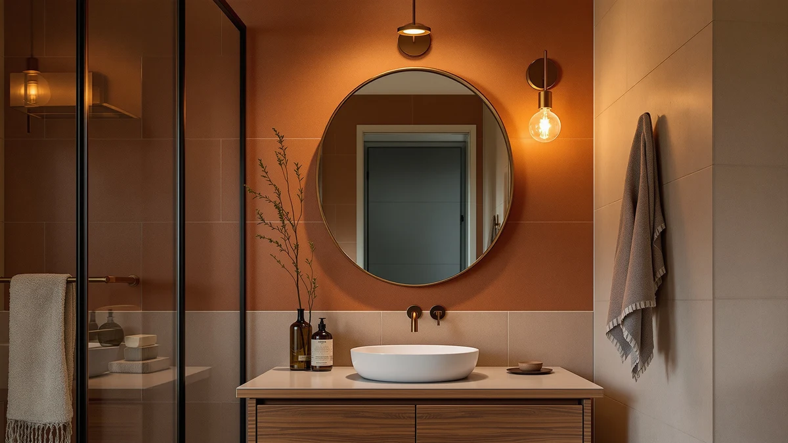

TokeShimi Beveled Bathroom Mirror Review (2026): Worth It?
Prices and picks verified as of November 2026. Independent, reader-supported reviews.


Quick Answer
We compared the TokeShimi 30x36 Beveled Bathroom Mirror against the MYSUNORIA, FGU, and HABIUBIU alternatives on price, materials, and features to see whether its $121.79 price tag earns a spot on your wall. The TokeShimi mirror wins on glass thickness and finish for buyers who want a frameless beveled look over backlit convenience.
Our pick: TokeShimi 30x36 Beveled Bathroom Mirror — $121.79 Check Price on Amazon
Bottom line: our top pick is the TokeShimi 30x36 Beveled Bathroom Mirror Frameless at $121.79.
Things to Know Before You Buy
- Design: the TokeShimi beveled bathroom mirror skips LED lighting entirely in favor of a 1-inch beveled edge, so you get a frameless, polished look rather than a backlit glow.
- Size: at 30 inches by 36 inches, it suits a single-sink vanity or narrow wall better than a wide double-sink setup.
- Glass: the panel is 4mm tempered glass rated waterproof and moisture resistant, thicker than the 3mm glass on the LED mirrors in this comparison.
- Price: at $121.79, it lands within three dollars of the MYSUNORIA and FGU alternatives, so lighting features rather than price separate these picks.
- Reviews: Amazon has not published a rating or review count for this listing yet, so we leaned on spec comparison rather than buyer history.
This Tokeshimi beveled bathroom mirror review compares the frameless 30x36 pick against three LED and storage alternatives to see whether its $121.79 price tag buys a meaningfully better mirror than its backlit competitors.
After lining up the beveled edge, glass thickness, and price against the MYSUNORIA, FGU, and HABIUBIU alternatives, the TokeShimi 30x36 Beveled Bathroom Mirror comes out as the strongest pick for a single-sink vanity that calls for a polished, frameless look instead of built-in lighting. The beveled edge and thicker glass come at a cost: no built-in lighting, and a shape that only fits certain bathroom layouts.
Why You Should Trust Us
Ilane Tall covers bathroom fixtures and vanity hardware for Best Bathroom Mirrors, and this tokeshimi beveled bathroom mirror review follows the same research process used across the site. We research published specs, compare pricing across models in a given category, and read verified buyer feedback instead of relying on marketing copy. We do not run a fake testing lab or claim to have mounted every mirror we cover, and when a detail is not confirmed in the product listing, we say so rather than guess.
For a mirror purchase, that means we pull the listed dimensions, materials, and current price for every model in a comparison, note the date those prices were checked, and flag when a seller has not published a rating or review count. Readers shopping for a beveled bathroom mirror deserve to know which claims come from the manufacturer, which come from verified owners, and which we could not confirm. We also cross-check feature claims like anti-fog coatings and soft-close hinges against the manufacturer's own listing copy before repeating them, rather than assuming a bullet point on Amazon is accurate.
Our Research Experience
Because this is a research-based review, our process for this tokeshimi beveled bathroom mirror review centers on comparing manufacturer specs, glass thickness, and pricing rather than hanging the mirror ourselves. We checked how the TokeShimi's 1-inch beveled edge and 4mm tempered glass stack up against the 3mm panels on the MYSUNORIA and FGU LED mirrors, then lined up pricing across all four products, from $119.99 to $122.54.
We also compared the HABIUBIU medicine cabinet against the three flat mirrors, since it competes for similar wall space at a close price but adds enclosed storage behind soft-close hinges instead of a plain reflective surface. Weighing a frameless mirror against a storage cabinet comes down to whether you need the extra shelving enough to give up the cleaner beveled look, and we flagged that trade-off rather than treating the two product types as interchangeable.
Overview & Specs

TokeShimi 30x36 Beveled Bathroom Mirror
What we like
- The 1-inch beveled edge gives it a more polished, finished look than flat-edged mirrors in the same price range
- 4mm tempered glass is thicker than the 3mm panels used in the MYSUNORIA and FGU LED alternatives
- The waterproof, moisture-resistant glass stands up to steamy bathrooms without a separate sealant step
Flaws but not dealbreakers
- It skips built-in lighting, so you still need a separate vanity light or sconces if the room runs dim
- At 30 inches by 36 inches, it fits a single-sink vanity better than a wide double-sink wall
- Amazon has not published a rating or review count yet, so you have less buyer feedback to draw on than with an established listing
| Material | Tempered glass + aluminum |
| Size | 30"L x 36"W |
The TokeShimi 30x36 Beveled Bathroom Mirror earns its place in this tokeshimi beveled bathroom mirror review mainly on finish and glass quality. The 1-inch beveled edge wraps the frameless panel in a polished line that reads closer to a custom-cut mirror than a mass-market one, and the 4mm tempered glass is noticeably thicker than the 3mm panels on the MYSUNORIA and FGU LED mirrors in this comparison. TokeShimi rates the glass waterproof and moisture resistant, which matters in a bathroom that runs humid after every shower, and the vertical 30-inch by 36-inch shape suits a single-sink vanity or a narrow hallway wall better than a wide double-sink run.
At $121.79, it sits within three dollars of the MYSUNORIA and FGU LED mirrors, yet it skips lighting entirely, so the money goes toward glass and finish rather than backlighting. Amazon has not yet published a rating or review count for this specific listing, which means you are weighing spec sheets rather than a long track record of verified buyers, and that uncertainty is worth factoring into the decision alongside the price. If your bathroom already has good vanity lighting and you want a frameless beveled finish, this is the pick in the comparison built for that job. If you need built-in lighting or anti-fog function, the MYSUNORIA and FGU alternatives below cover that ground instead.
What We Liked
This tokeshimi beveled bathroom mirror review turns up one clear strength: glass quality. The 4mm tempered panel is thicker than the 3mm glass used in both LED alternatives, and the 1-inch beveled edge gives the frameless design a finished look that a flat-cut mirror in the same price range does not match. The waterproof, moisture-resistant rating also means you do not need a separate sealant or trim kit to protect the edges in a humid bathroom.
Compared with the MYSUNORIA and FGU mirrors, the TokeShimi pick is the only option in this lineup built around finish rather than lighting features, and for a vanity wall that already has good overhead or sconce lighting, that beveled edge is where the extra attention to detail shows up most. The frameless edge also simplifies cleaning, since there is no raised trim or seam along the border where grime and moisture can collect the way they do on framed alternatives.
What Could Be Better
The biggest gap is lighting. Both the MYSUNORIA and FGU alternatives in this comparison include built-in LED strips with anti-fog function, features the TokeShimi beveled bathroom mirror skips entirely. If your bathroom lacks a strong vanity light already, you will need to budget for one separately.
Because the listing has no review count yet, you are taking on more of the buying risk yourself than you would with a mirror that already has hundreds of verified owner ratings. The 30-inch by 36-inch size also rules out wide double-sink walls, so measure before you commit to this shape.
Who Is It For?
This TokeShimi beveled bathroom mirror makes the most sense for homeowners who already have reliable vanity lighting and want a frameless, beveled finish instead of a backlit glow. A single-sink bathroom, powder room, or narrow hallway wall is where the vertical 30-inch by 36-inch shape fits best.
If your bathroom runs dim and you do not want to add a separate light fixture, the MYSUNORIA or FGU LED alternatives below are a better match for this search. Buyers who want storage behind the mirror instead of a plain reflective surface should look at the HABIUBIU medicine cabinet instead. Renters weighing a short-term stay should also factor in that a frameless beveled mirror like this one is a more permanent fixture choice than a plug-in LED mirror light, since swapping it out later means repeating the wall-mounting step.
Alternatives to Consider
If the lack of built-in lighting or the size of the TokeShimi beveled bathroom mirror does not fit your bathroom, these three alternatives cover LED lighting, a two-pack option, and a storage-focused medicine cabinet.

Premium Choice
40"x30" LED Bathroom Mirror with
A 40-inch by 30-inch LED mirror with front and back lighting, anti-fog function, and dimmable color temperature, built for a vanity that needs lighting more than it needs a beveled edge.
$122.54
Check Price on Amazon
Also Great
LED Bathroom Mirror with Lights
A two-pack of 32-inch by 24-inch LED mirrors with dimmable front and back lighting, a flexible option if you need to light two smaller vanities instead of one large wall.
$120.89
Check Price on Amazon
Best Value
HABIUBIU 20 x 26 in
A 20-inch by 26-inch aluminum medicine cabinet with adjustable shelves and soft-close hinges, worth considering if you want storage behind the mirror instead of a plain reflective surface.
$119.99
Check Price on AmazonFrequently Asked Questions
Is the TokeShimi beveled bathroom mirror worth the money?
At $121.79, the TokeShimi mirror costs about the same as the MYSUNORIA and FGU LED alternatives, but it spends that budget on a thicker 4mm tempered glass panel and a 1-inch beveled edge instead of built-in lighting. It is worth it if your bathroom already has good vanity lighting and you want a frameless, polished finish. If you need built-in lighting, the LED alternatives are the better buy.
How does the TokeShimi mirror compare to the MYSUNORIA and FGU LED alternatives?
The MYSUNORIA mirror is larger at 40 inches by 30 inches and adds front and back LED lighting with anti-fog function for $122.54. The FGU option is a two-pack of smaller 32-inch by 24-inch LED mirrors at $120.89. The TokeShimi pick skips lighting but uses thicker 4mm tempered glass and a beveled edge, so the choice comes down to whether you value lighting or finish more.
Should you buy a flat mirror or a medicine cabinet instead?
Choose a flat mirror like the TokeShimi, MYSUNORIA, or FGU pick if you have separate bathroom storage and need only a reflective surface. Choose the HABIUBIU medicine cabinet instead if you want adjustable shelving behind the mirror, since its 20-inch by 26-inch footprint trades some reflective area for enclosed storage.
Final Verdict
Lighting versus finish is the real trade-off in this tokeshimi beveled bathroom mirror review. For a vanity wall that already has good light and wants a frameless, polished look, the TokeShimi 30x36 Beveled Bathroom Mirror is the strongest pick in this comparison at $121.79. If your bathroom runs dim, the MYSUNORIA and FGU LED alternatives cover that need for a similar price, and the HABIUBIU medicine cabinet is worth a look if storage behind the mirror matters more to you than a beveled edge. Measure your wall and check your existing lighting before you buy any of them, since those two details decide the right pick faster than price does.